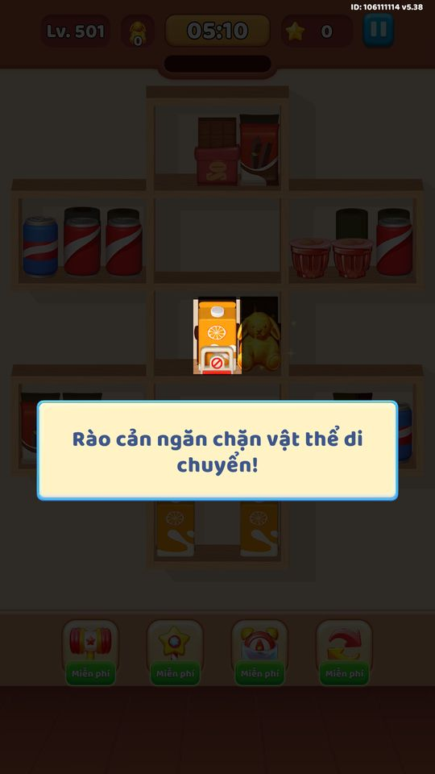
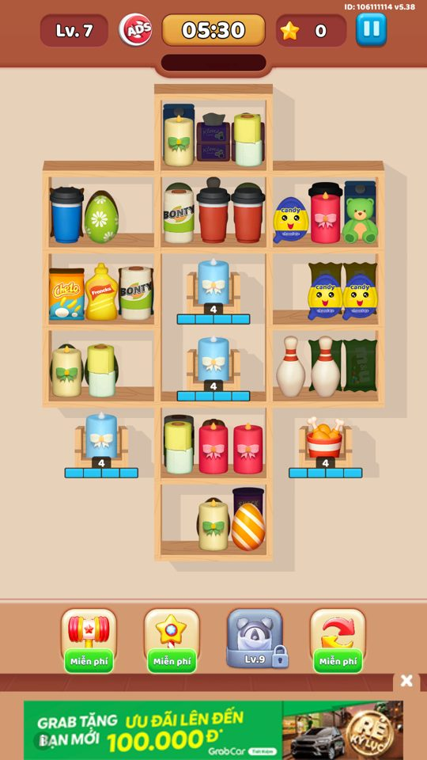

Ảnh chụp màn hình
Bom, lớp ẩn, rào cản, kệ tự đóng, ô kẹt và ô khoá làm khó việc sort.
Mô tả
- Các màn khó được thêm 'vật cản' làm phức tạp việc sort hàng.
- Mỗi vật cản là một MechanicData gắn vào màn (LevelInfo.mechanics) hoặc thuộc tính của kệ (numberCellLock, itemHiden).
- Bộ mechanic chính: ReverseItem (đảo), LockSlot (ô kẹt), CloseCellEnd (kệ tự đóng), BombItem (bom), HiddenLayerItem (lớp ẩn), LockedItem (rào cản).
- Mỗi loại có một controller riêng và một bước hướng dẫn khi lần đầu xuất hiện.
Thiết kế chi tiết
Tóm tắt thiết kế
Code Mechanic theo màn: ReverseItem, LockSlot, CloseCellEnd, BombItem (60 giây), HiddenLayerItem, LockedItem, cộng Cell Lock. Mỗi loại có màn tutorial riêng.
Playtest Màn 501 hiện tooltip “Rào cản ngăn chặn vật thể di chuyển!” với nút Đã hiểu ngay khi vào màn.
Luồng người chơi từng bước
- Giới thiệuGiao diện PlaytestTooltip rào cản, ảnh 07/10 kệ giới hạn.

Tooltip rào cản (màn 501) 
07/10: kệ giới hạn số món


Bảng tổng hợp mọi tính năng đã làm chi tiết: GoodsSort_ThietKeChiTiet.xlsx.
Còn thiếu / chưa xác minh
Mở khóa & điểm vào
Thêm dần theo màn; mỗi mechanic có một màn tutorial riêng (MechanicDataController.IsTutComplete). Mọi mechanic (gồm cả CloseCellEnd) xuất hiện theo dữ liệu màn (LevelInfo.mechanics do server/baked) — CloseCellEndController KHÔNG có field/hằng số levelUnlock trong client (ctor chỉ khởi tạo listCellClosed/listCellCloseEnd); GenLevelController dựng mechanic từ dữ liệu màn và khôi phục qua UpdateFromDataSaved.
Điểm vào:
- Xuất hiện ngay trong bàn khi màn chứa mechanic tương ứng
- Popup tutorial lần đầu gặp mechanic (các khoá loc mechanic_tut_*, tutorial_hidden_layer_item)
Cách hoạt động
- Với mỗi MechanicData, controller tương ứng được khởi tạo qua LevelController.InitData / CheckAndInitMechanic và nhận chuỗi tham số MechanicData.data.
- BombItemController gắn đồng hồ 60s cho item bom; để nổ là thua, phải Match-3 bom trước đó.
- HiddenLayerItemController che item ẩn cho đến khi chúng lên tới lớp đầu, rồi lộ dần khi lớp trên được dọn.
- LockedItemController tạo overlay rào cản khoá item không cho di chuyển cho tới khi đủ điều kiện mở.
- CloseCellEndController đóng vĩnh viễn kệ khi kệ hết hàng; LockSlotController giữ ô kẹt cần nhiều match-3 để giải.
- Lần đầu gặp mỗi mechanic, GetMechanicTutorial bật popup hướng dẫn rồi MechanicDataController.CompleteTut lưu lại (key 'mechanic').
Luồng chi tiết theo code
GenLevelController dựng bàn từ LevelInfo; với mỗi MechanicData trong LevelInfo.mechanics, controller tương ứng được khởi tạo qua LevelController.InitData / CheckAndInitMechanic và nhận chuỗi tham số MechanicData.data. BombItemController.SetupTimers gắn đồng hồ cho các item bom (đếm ngược bombCountDownTime = 60s); nếu bom chạm lớp 0 và hết giờ thì nổ -> thua, người chơi phải Match-3 bom trước đó. HiddenLayerItemController quét bàn (ScanLevel) và che các item ẩn cho đến khi chúng lên tới lớp đầu; khi item phía trên bị dọn thì lộ dần (TryProcessExistingItems). LockedItemController tạo overlay 'rào cản' khoá item không cho di chuyển cho tới khi điều kiện mở (LockedItemAttachmentService.CreateOverlay, PlayUnlock). CloseCellEndController đóng vĩnh viễn kệ khi kệ hết hàng (UpdateListCellCloseEnd, mechanic_tut_cell). LockSlotController giữ một ô 'không di chuyển được' cần nhiều lần match-3 để giải (mechanic_tut_lock_slot). ReverseItemController xử lý item đảo. Ô khoá (CellLock) và kệ di chuyển xử lý song song (xem feature CellLock, GameplayMechanics). Trạng thái mọi vật cản được lưu/khôi phục cùng tiến trình màn (GetPendingSlots, UpdateFromDataSaved, CellLockDataSaved).
Ảnh chụp màn hình (1)
1 ảnh chụp trong game (BlueStacks/LDPlayer, tài khoản cấp 4). Bấm ảnh để phóng to; nhãn UC dẫn tới use case tương ứng.
Số liệu chính
(không có)
Ghi chú thiết kế
- Ưu tiên ghép bom trước khi chúng lên lớp 0 và đếm về 0.
- Lớp ẩn khiến bàn khó đoán — giữ nhiều kệ trống để có chỗ xoay sở khi item lộ ra.
Use case (8)
Bấm vào từng use case để mở. Mở/đóng tất cả
UC-01 Bom đếm ngược, phải ghép trước khi nổ
Các bước- BombItemController.SetupTimers gắn đồng hồ 60s cho bom
- Update đếm ngược; _isHaveBombInLayer0 cảnh báo khi bom lên lớp 0
- Người chơi Match-3 bom để dừng/dọn trước khi hết giờ
| Actor | Player |
|---|---|
| Trigger | Màn có BombItem (MechanicType=3) |
| Điều kiện | Có item bom trên bàn |
| Kết quả | Ghép kịp thì an toàn; để nổ thì thua màn |
| Quy tắc / số liệu | bombCountDownTime = 60f; tutorial: 'Match-3 BOMBS to STOP them from exploding!' |
| Evidence | BombItemController.SetupTimers; BombItemController.bombCountDownTime; loc mechanic_tut_bomb; enum MechanicType.BombItem=3 |
UC-02 Item ẩn dưới lớp che
Các bước- HiddenLayerItemController.InitData + HiddenLayerAttachmentService.ScanLevel gán overlay che
- Item giữ ẩn cho tới khi lên lớp đầu tiên (TryProcessExistingItems)
- Khi lớp trên được dọn, item ẩn lộ ra (HandleSpawnItem/HandleRemoveItem)
| Actor | System |
|---|---|
| Trigger | Màn có HiddenLayerItem (MechanicType=12) hoặc itemHiden > 0 |
| Điều kiện | Có slot được đánh dấu ẩn |
| Kết quả | Người chơi không biết trước loại hàng ẩn cho tới khi lộ ra, tăng độ khó tính toán |
| Quy tắc / số liệu | LevelInfo.itemHiden đếm số item ẩn; tutorial: 'Items stay hidden until they reach the first layer.' |
| Evidence | HiddenLayerItemController.TryProcessExistingItems; HiddenLayerAttachmentService.ScanLevel; LevelInfo.itemHiden; loc tutorial_hidden_layer_item |
UC-03 Rào cản khoá item không cho di chuyển
Các bước- LockedItemController.EnsureServices + LockedItemAttachmentService.ScanContainer/CreateOverlay
- LockedItemOverlay.Bind giữ item cố định
- Khi đạt điều kiện mở, PlayUnlock gỡ rào (LockedItemController.CollectLockedItemTypes)
| Actor | System |
|---|---|
| Trigger | Màn có LockedItem (MechanicType=13) |
| Điều kiện | Item bị gắn rào cản |
| Kết quả | Item bị khoá chỉ dùng được sau khi phá rào |
| Quy tắc / số liệu | tutorial: 'The barrier prevents the object from moving!' |
| Evidence | LockedItemController; LockedItemAttachmentService.CreateOverlay; LockedItemOverlay.PlayUnlock; loc mechanic_tut_locked_item; enum MechanicType.LockedItem=13 |
UC-04 Kệ tự đóng khi hết hàng
Các bước- CloseCellEndController.SetupCloseCellEnd tạo prefab che
- UpdateListCellCloseEnd theo dõi kệ khi hàng cạn
- Kệ chuyển sang trạng thái đóng (IsClosed) và không dùng lại được
| Actor | System |
|---|---|
| Trigger | Màn có CloseCellEnd (MechanicType=2) trong LevelInfo.mechanics |
| Điều kiện | Kệ được đánh dấu close-end |
| Kết quả | Mất dần số kệ khả dụng, dễ dẫn tới kẹt/hết chỗ |
| Quy tắc / số liệu | Xuất hiện theo dữ liệu màn (LevelInfo.mechanics), không có hằng số levelUnlock client; tutorial: 'This SHELF will CLOSE when there are no items left.' |
| Evidence | CloseCellEndController.SetupCloseCellEnd; CloseCellEndController.UpdateListCellCloseEnd; loc mechanic_tut_cell; enum MechanicType.CloseCellEnd=2 |
UC-05 Ô kẹt cần nhiều lần ghép để giải
Các bước- LockSlotController giữ ô cố định (LockSlotController là controller tĩnh của LevelController)
- Người chơi tạo nhiều match-3 để lấy 'cái túi' giải phóng ô
- Đủ số lần thì ô được gỡ
| Actor | Player |
|---|---|
| Trigger | Màn có LockSlot (MechanicType=1) |
| Điều kiện | Có ô 'không di chuyển được' |
| Kết quả | Phải dồn match-3 để mở, làm chậm nhịp giải màn |
| Quy tắc / số liệu | tutorial: 'Make 8 quick match-3s to get THE BAG that sends the JUMPY FROG away — you CAN'T MOVE him!' (8 lần match-3) |
| Evidence | LevelController.LockSlotController; loc mechanic_tut_lock_slot; enum MechanicType.LockSlot=1 |
UC-06 Item đảo (Reverse)
Các bước- ReverseItemController khởi tạo khi màn chứa mechanic ReverseItem
- Item đảo thay đổi/hoán vị khi tương tác
| Actor | System |
|---|---|
| Trigger | Màn có ReverseItem (MechanicType=0) |
| Điều kiện | Có item kiểu đảo |
| Kết quả | Thêm biến số khi tính nước ghép |
| Quy tắc / số liệu | MechanicType.ReverseItem = 0 (mechanic đầu danh sách) |
| Evidence | ReverseItemController; enum MechanicType.ReverseItem=0 |
UC-07 Ô khoá (Cell Lock)
Các bước- LevelController.InitData truyền numLock + cellLocks cho CellLockController
- Mỗi match-3 lân cận giảm số khoá; hoặc mở bằng 1000 vàng / xem ads
| Actor | Player |
|---|---|
| Trigger | Màn có numberCellLock > 0 |
| Điều kiện | Có kệ bị khoá |
| Kết quả | Kệ bị khoá chỉ dùng được sau khi mở (xem feature CellLock) |
| Quy tắc / số liệu | num_lock mặc định 4; goldToUnlockCellLock = 1000 |
| Evidence | CellLockController.InitData; LevelInfo.numberCellLock; (chi tiết ở feature CellLock) |
UC-08 Tutorial lần đầu gặp mỗi vật cản
Các bước- LevelController.GetMechanicTutorial xác định mechanic cần dạy
- Hiển thị popup hướng dẫn (loc mechanic_tut_* / tutorial_*)
- MechanicDataController.CompleteTut đánh dấu đã dạy (key 'mechanic')
| Actor | System |
|---|---|
| Trigger | Lần đầu vào màn chứa một mechanic mới |
| Điều kiện | MechanicDataController.IsTutComplete(type) = false |
| Kết quả | Mỗi vật cản chỉ dạy một lần rồi lưu lại |
| Quy tắc / số liệu | Trạng thái tutorial lưu theo MechanicType trong save key 'mechanic' |
| Evidence | LevelController.GetMechanicTutorial; MechanicDataController.IsTutComplete; MechanicDataController.CompleteTut |
Cấu hình (9)
Gộp mọi nguồn: const trong code, JSON mặc định trong Resources, bảng static, storage key, AB test, cờ server.
| Nguồn | Key | Kiểu | Giá trị | Ý nghĩa | Nơi định nghĩa |
|---|---|---|---|---|---|
| code const | MechanicType | enum | ReverseItem=0, LockSlot=1, CloseCellEnd=2, BombItem=3, HiddenLayerItem=12, LockedItem=13 | Danh mục vật cản/mechanic của màn | enum MechanicType |
| config class | MechanicData | class | type:MechanicType, data:string | Một vật cản trong màn, 'data' là tham số dạng chuỗi của mechanic đó | class MechanicData (LevelInfo.mechanics) |
| code const | bombCountDownTime | float | 60 | Thời gian (giây) đếm ngược trước khi bom nổ | BombItemController (const) |
| config class | CloseCellEnd xuất hiện | data | theo LevelInfo.mechanics (không có hằng số client) | Cơ chế kệ tự đóng xuất hiện theo dữ liệu màn; CloseCellEndController không có field levelUnlock (ctor chỉ init listCellClosed/listCellCloseEnd) | LevelInfo.mechanics; CloseCellEndController.SetupCloseCellEnd; GenLevelController |
| code const | LockSlot số lần match-3 | int | 8 (theo tutorial) | Số match-3 cần để giải ô kẹt LockSlot | loc mechanic_tut_lock_slot |
| config class | LevelInfo.numberCellLock / itemHiden | int | do dữ liệu màn | Số ô khoá và số item ẩn trong màn | class LevelInfo |
| config class | CloseCellEndData | class | listCloseCellEndIndex:List<int> | Danh sách chỉ số kệ sẽ tự đóng | class CloseCellEndData |
| config class | HiddenLayerItemData | class | slots:List<MechanicSlotRef> | Danh sách slot item ẩn | class HiddenLayerItemData |
| storage key | mechanic | string | key save trạng thái tutorial mechanic | Đánh dấu đã dạy từng loại mechanic | MechanicDataController (const key) |
Giao diện (UI)
| Element | Class | Mục đích |
|---|---|---|
| Popup tutorial mechanic | mechanic_tut_bomb / mechanic_tut_cell / mechanic_tut_lock_slot / mechanic_tut_locked_item / tutorial_hidden_layer_item | Dạy người chơi cách xử lý từng vật cản khi gặp lần đầu |
| Overlay bom / rào cản / lớp che | BombTimer, LockedItemOverlay, HiddenLayerItem | Hiển thị trạng thái vật cản ngay trên bàn |
Analytics (1)
| Event | Tham số | Khi nào |
|---|---|---|
LogLevel (GetMechanicTutorial) | mechanic tutorial type | Khi kết thúc màn có mechanic mới |
Storage keys
mechanic level_saved_1
Chưa đọc được / ghi chú
- Thời điểm xuất hiện của mọi mechanic (gồm cả CloseCellEnd) nằm trong dữ liệu màn do server/baked, không có hằng số client.
- ReverseItem và LockSlot ít lộ logic trong dossier; nội dung MechanicData.data (tham số từng mechanic) là chuỗi serialize theo màn, không giải nghĩa được từng trường từ code.
Tính năng liên quan
Cơ chế sort hàng hoá Ô khóa (Cell Lock) Độ khó màn (Normal/Hard/Super) Tiến trình màn & server level
Nguồn đã đọc
- features/CellLockController.md
- features/HiddenLayerItemController.md
- features/CloseCellEndController.md
- PseudoC/Assembly-CSharp/BombItemController.c
- PseudoC/Assembly-CSharp/CloseCellEndController.c
- PseudoC/Assembly-CSharp/HiddenLayerItemController.c
- UnityExport/.../MechanicType.cs
- UnityExport/.../MechanicData.cs
- UnityExport/.../LevelInfo.cs
- facts/loc/terms.json